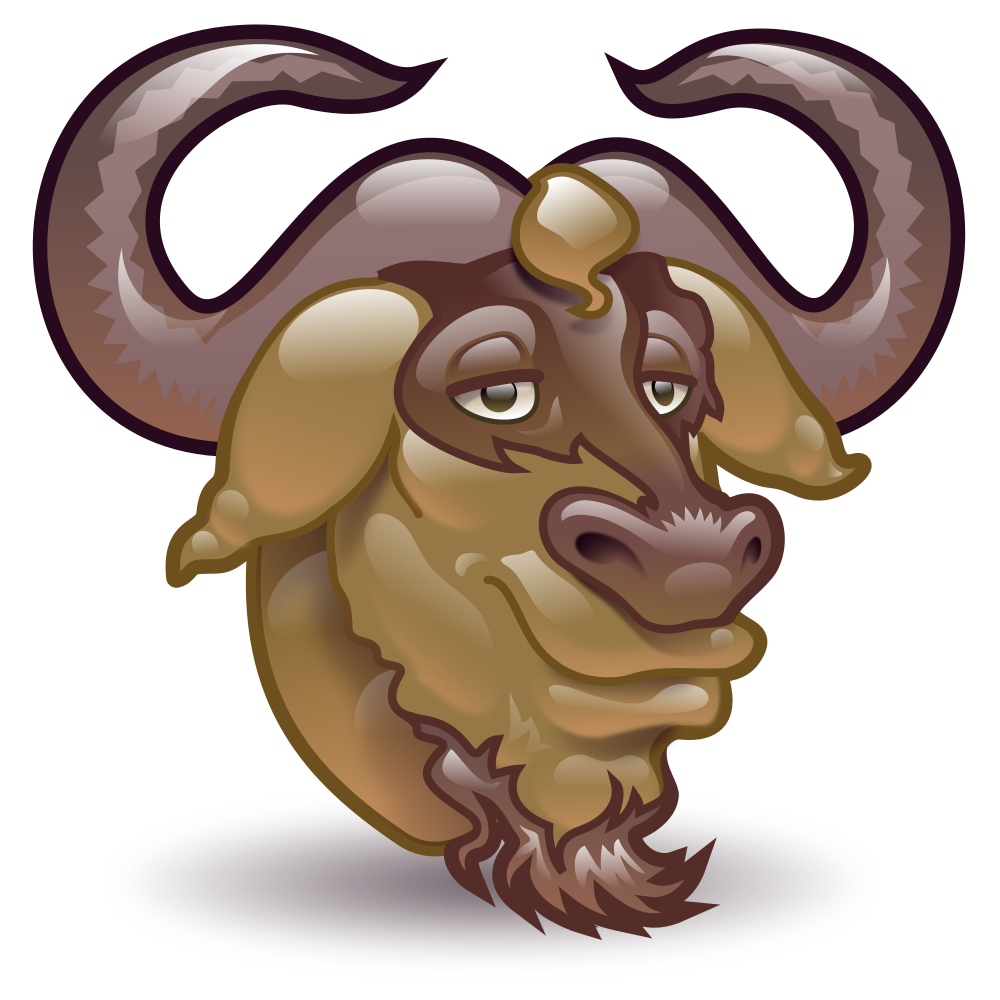

O que é GNU
GNU (acrônimo de GNU's Not Unix) foi lançado em 1983 por Richard Stallman, como um sistema operacional que seria feito por pessoas trabalhando juntas pela liberdade de todos os usuários de software de controlar seus computadores.
GNU (acrônimo de GNU's Not Unix) foi lançado em 1983 por Richard Stallman, como um sistema operacional que seria feito por pessoas trabalhando juntas pela liberdade de todos os usuários de software de controlar seus computadores.
O objetivo inicial do projeto GNU é oferecer um sistema compatível com UNIX que seja 100% software livre. O termo "free" utilizado se trata de liberdade, não de preço, o que significa que você pode ou não ter de pagar por software GNU, mas a partir do momento que você o possui, você tem as quatro liberdades de seu uso.
Software pode ser considerado livre se seus usuários possuem as quatro liberdades essenciais:
Por volta de 1990 quase todos os componentes do Projeto GNU haviam sido escritos com exceçaõ do Kernel. Então Linux, um kernel Unix-like foi escrito por Linus Torvalds em 1991 e feito software livre em 1992. A combinação do kernel do Linux com os componentes do sistema GNU que haviam sido desenvolvidos resultou num sistema operacional completo: GNU/Linux. A versão principal do Linux contém "blobs" de firmware proprietário, então ativistas de software livre mantém uma versão modificada e livre, chamada Linux-Libre.